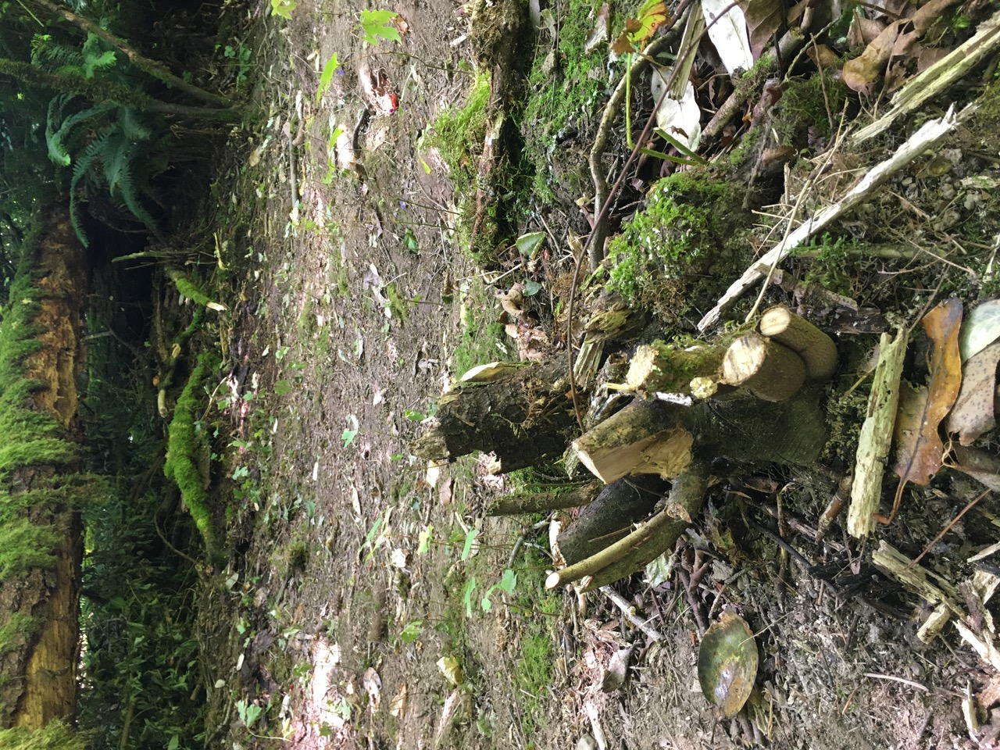
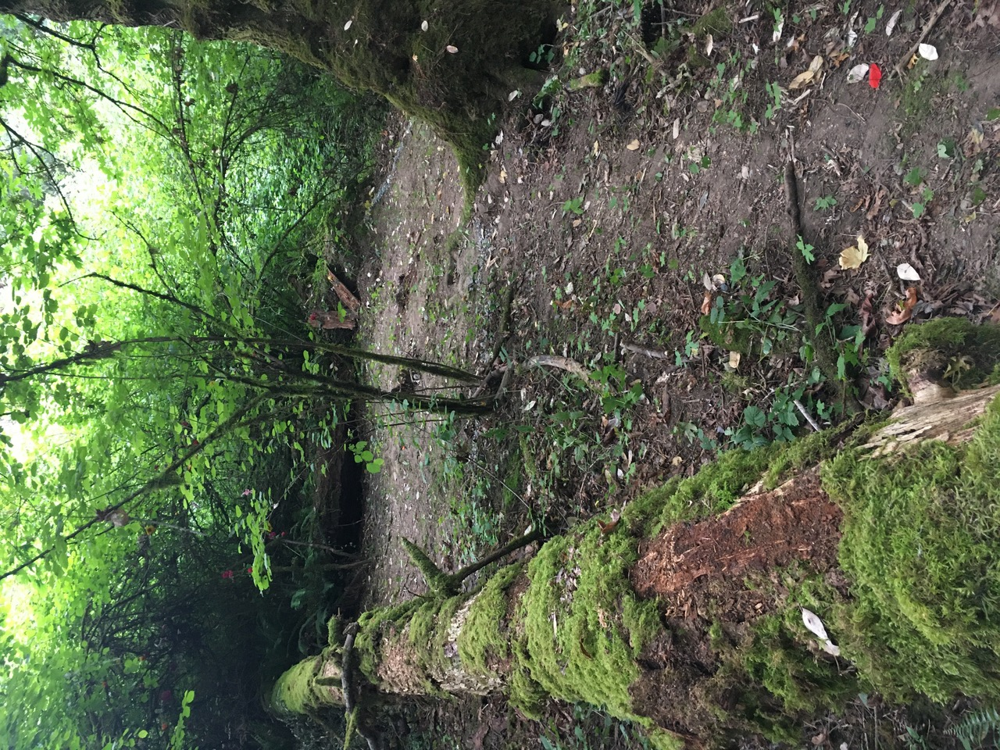
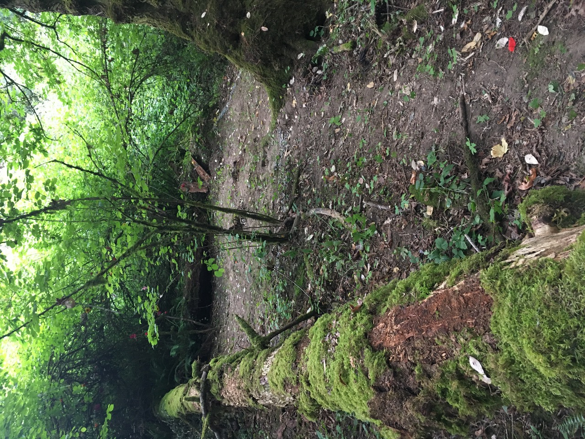

 Entering the Circle  Part of the Gravel Circumference Left-over Flower Decorations Rapid low-res video walking back to the Andrews Bay Trail
 Part of the Gravel Circumference Left-over Flower Decorations Rapid low-res video walking back to the Andrews Bay Trail
Left-over Flower Decorations Rapid low-res video walking back to the Andrews Bay Trail
Rapid low-res video walking back to the Andrews Bay Trail